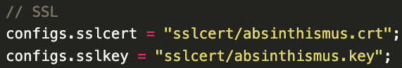
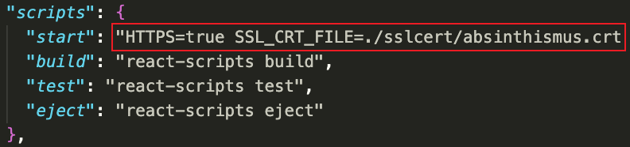
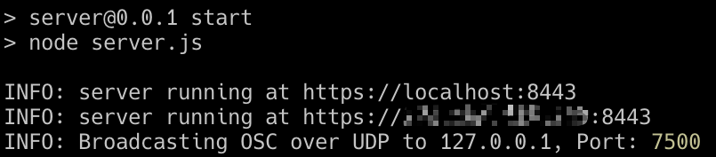

Installation
1. Install npm & node.js
Since the whole project is based on web technologies. Please make sure you have node.js and npm installed. Please check the npm Docs to get started with the Nearest Phase Modulator:)
2. Get the projects
Simply clone the Spaton source code to your local machine.
git clone git@github.com:zeyuyang42/Spaton.git
cd Spaton
3. Create your own SSL certificate
All sensor Web-API works only under https, SSL certificate are required to establish secure https connection. I recommend using OpenSSL to get a self-signed SSL certificate. There is a good reference guide. Or you can just follow the instruction below.
mkdir sslcert
cd sslcert
openssl genrsa -out ${anynameyoulike}.key 2048 # generate private key
openssl req \
-newkey rsa:2048 -nodes -keyout ${anynameyoulike}.key \
-x509 -days 365 -out ${anynameyoulike}.crt # generate certificate
cd ..
cp -r sslcert/ server/sslcert # copy the sslcert to server
cp -r sslcert/ client/sslcert # copy the sslcert to client
4. Install packages
Run npm install in server and client folder.
5. Change configs
5.1 Certificate
Change the name of key and certificate if you don't use the name absinthismus.
Server:
change the sslcert and sslkey configure in the configs.js file.

Client:
Change the scirpt/start configure in the package.json file.

5.2 IP
Change the configs.serverIP and configs.clientIP in each of the two configs.js files on the client and server from your current LAN IP.
5.3 Others
You can customise the system to suit your composition. This part is elaborated in the Usage section.
6. Launch
Run npm start to start server and client. You should see the following outputs when nothing goes wrong :)
Client:

Server:
